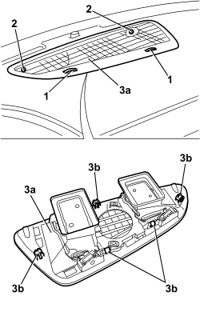

5010C30 CENTRAL AIR VENT IN DASHBOARD - R.R.
- Path
- Procedures > 50 AUXILIARY UNITS > 5010 CLIMATE CONTROL - MISCELLANEOUS > 5010C AIR VENTS > 5010C30 CENTRAL AIR VENT IN DASHBOARD - R.R.
- Kind
- repair procedure (removal / refitting; the operation number is the code)
- Applies to
- all engines; all production periods
- Interactive page
- https://sloeber94.github.io/elrnDB/#/939010901
Applies to: all engines; all production periods
 Removing
Removing
 Refitting
Refitting1. Place the vents in the air flow closed off position.
2. Undo the bolts.
3. Remove the vent assembly (3a) releasing the flexible retainers (3b).

Applies to: all engines; all production periods
Refitting
Removing- Check that the vent assembly is not damaged.
- Position the vent assembly and attach the retainers.
- Tighten the bolts.
- Check that the vents are working.
Topics that link to this page (8)
- S061 DASHBOARD CREAKING
- 1820B21 MASTER CYLINDER (PUMP) - R R FOR RIGHT HAND DRIVE VERSIONS
- 3330B02 PEDAL ASSEMBLY - R.R
- 3330B23 BRAKE PEDAL - R.R. FOR RIGHT HAND DRIVE VERSIONS
- 3330B27 CLUTCH PEDAL - R.R. FOR RIGHT HAND DRIVE VERSIONS
- 3330B42 PEDAL UNIT SUPPORT - R.R. FOR RIGHT HAND DRIVE VERSIONS
- 3330D18 BRAKE SERVO R R FOR RIGHT HAND DRRIVE VERSIONS
- 7040A27 DASHBOARD TRIM - STRIPPING FOLLOWING REPLACEMENT